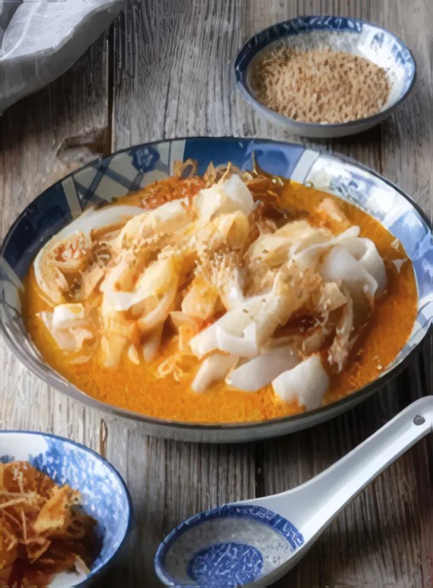
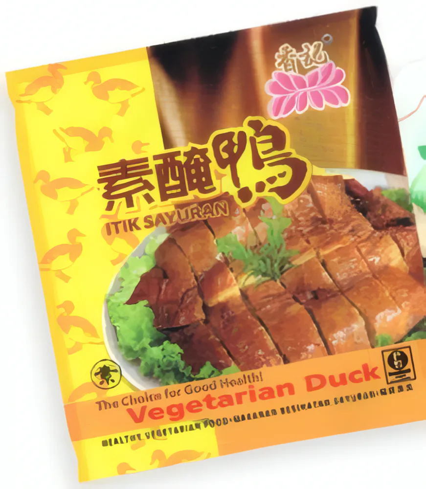
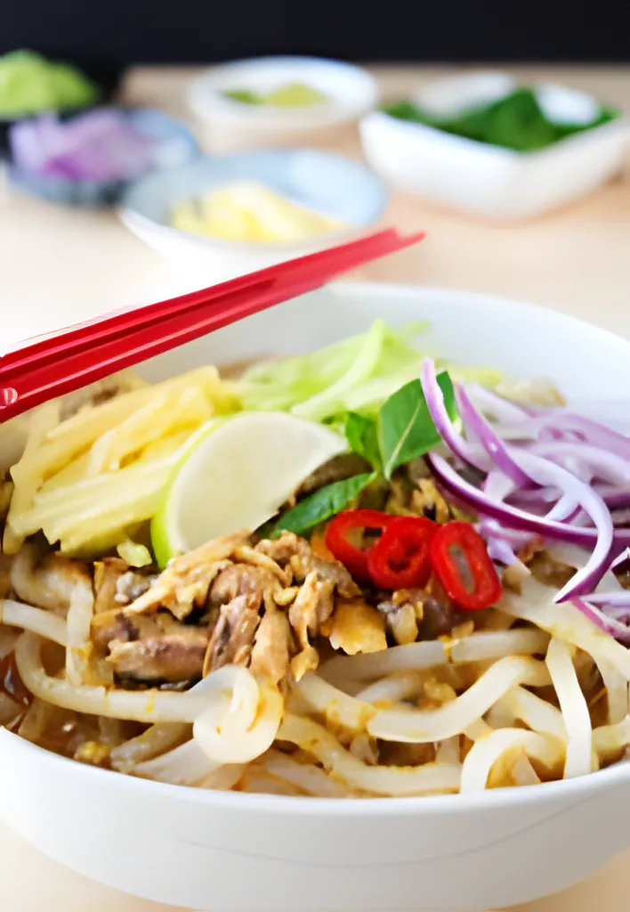
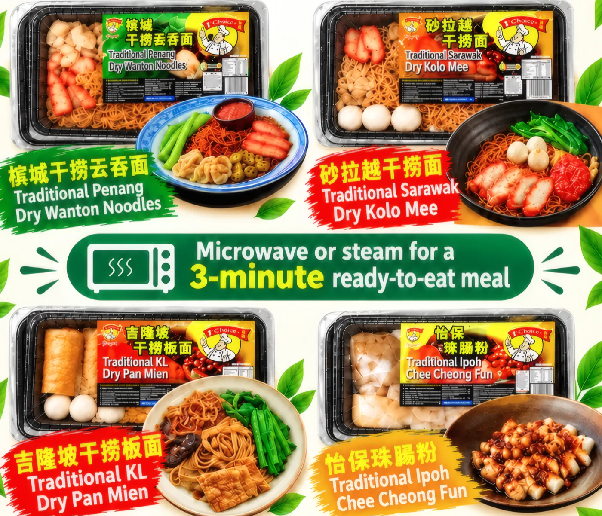
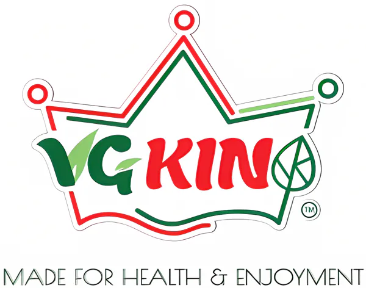

What wesupply
Dry, household, chilled and frozen lines, imported and kept in our East Tamaki warehouse for retailers, wholesalers, distributors, caterers and restaurants. Below is what's in each range and how to start an account with us.


01
Dry foods
The pantry lines: what goes into the cooking, onto the shelf by the till and into the hot drinks cupboard.
- Meal ingredients
- Confectionery
- Snacks
- Drinks
- Hot drink mixtures
- Healthy alternatives
02
Household
Everyday non-food lines for shops and for kitchens, including catering supplies. Among them: Bic razors and blades, Softlan detergents and 'Super' cloths and scourers.
- Cleaning supplies
- Toiletries
- Laundry
- Disposables
- Skin and body care
- Catering supplies

03
Chilled
Kept in our chillers until they leave. LoSam's soft and firm pasteurised tofu and grass jelly come vacuum-packed in trays and tubes.
- Soy bean
- Soy protein
- Tofu
- Pickled veges

04
Frozen
From our freezers: pastries, buns and vegetarian foods such as Hiang Kee, made only from ingredients of plant origin.
- Spring roll pastries
- Steamed buns
- Vegetarian foods
- Soy protein
- Ice blocks
- Roti and paratha
1st Choice fresh noodles
Our new and improved range, easy to prepare. Pack sizes as listed.



The full fresh noodle range
- Bee Tai Bak 500g
- Kueh Teow Soup 500g
- Penang Kueh Teow 500g
- Yellow Fresh Noodle 500g
- Laksa Noodle 500g
- Pan Mee Coarse 500g
- Cheong Fun Flat 1kg
- Wonton Noodles 2kg
- Hokkien Mee 500g
Dishes shown are serving suggestions, for illustrative purposes only.

3min
Microwave or steam. See the full poster.
Ready-to-eat meals, now in stock
Malaysian street food inspired meals from 1st Choice. Microwave or steam for a 3-minute ready-to-eat meal. Vegetarian and vegan friendly, with sauce and garnishing.
- Traditional Penang Dry Wanton Noodles
- Traditional Sarawak Dry Kolo Mee
- Traditional KL Dry Pan Mien
- Traditional Ipoh Chee Cheong Fun
Brands
Our own labels, the agency brands we represent, and a long list of familiar names we carry.
Our brands
- AmoycanPastes, sauces and drinks
- Chili BrandDry noodles
- First ChoiceFresh noodles, buns and tofus
- Glucos CareTeas
- IkanPastes, sauces and flour
- KaiXinHealthy drinks and desserts
- TETPastes and sauces
- WahyuPastes, sauces and snacks
Agency brands

VG KingVeganOther brands we carry
Not limited to these, and many more.
- Horngwell Coffee
- Nestlé & Nescafé
- B&W Coffee and Root Beer
- Nest's Kingdom Bird's Nest Concentrate
- Fomec's Bird's Nest Concentrate
- Maggi Noodles & Sauces
- Golden Champ
- Mikado
- Happy Grass
- Claypot
- Uncle Sun
- Baba's
- A1 Sauces
- Cheong Kim Chuan
- Chen Seng Peanuts
- Old Village
- Old Town Coffee Range
- Chek Hup Coffee Range
- Twenty Twenty Penang Laksa Noodles
- Lot 100
- F&N Assorted RTDs
- Ban Hock Confectionery
- Myojo Noodles
- London & Apollo Cakes
- Miaow Miaow and Bika Crackers
- Spring Home Pastries
- Ocean Ria Fish Products
- Teoh Kim Chye Vegetarian Soy Protein
- Bic Razors & Blades
- Softlan Detergents
- 'Super' Cloths and Scourers
Open a trade account
For retailers, wholesalers, distributors, restaurants, caterers, importers and exporters.
Fill in the forms
The Client Application (Information) Form, and the Credit Account Application Form if you want credit. Both are on our Terms of Trade page.
Sign the conditions
Complete the front page and sign or initial the conditions on the reverse, then send them to sales@naturalfield.co.nz.
Start ordering
All applications are subject to approval. Once you're set up, ask your account manager for a login to our online catalogue and ordering system.